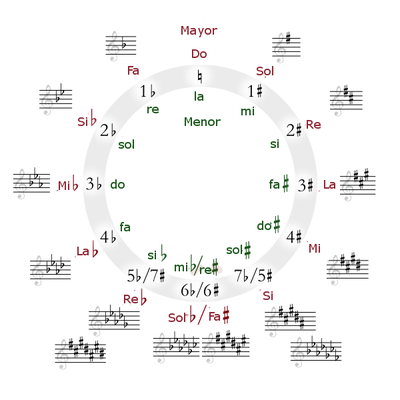
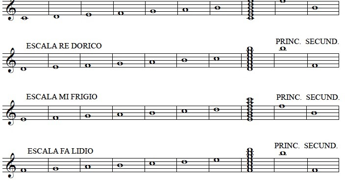

Tipos de armonía
Otro de los puntos importantes para conocer sobre la armonía musical y definición son sus diferentes tipos. Cada uno de ellos cumple una función específica dentro de la estructuración de una canción. Los dos principales tipo de armonía en la música son los siguientes:
• Armonía tonal. Es uno de los modelos de composición musical más utilizados a lo largo de la historia. Se basa principalmente en la tonalidad que posea la canción. Todas las notas musicales deberán mantenerse dentro de una secuencia de acordes que pertenezca a tonos mayores o menores. Normalmente, los tonos mayores se emplean para transmitir sensaciones más cálidas y alegres, mientras que los tonos menores son un poco más oscuros.
• Armonía modal. Es aquella que se utiliza para reflejar la riqueza sonora de un modo musical en una obra. El modo se utiliza para realizar un orden determinado de ciertas notas dentro de una escala. La armonía modal implica el uso de polifonías y relaciones musicales existentes entre los modos y los usa para dar mayor riqueza armónica a la obra. Es regularmente utilizada en el jazz clásico y ocasionalmente en otros géneros como el rock y el pop.
